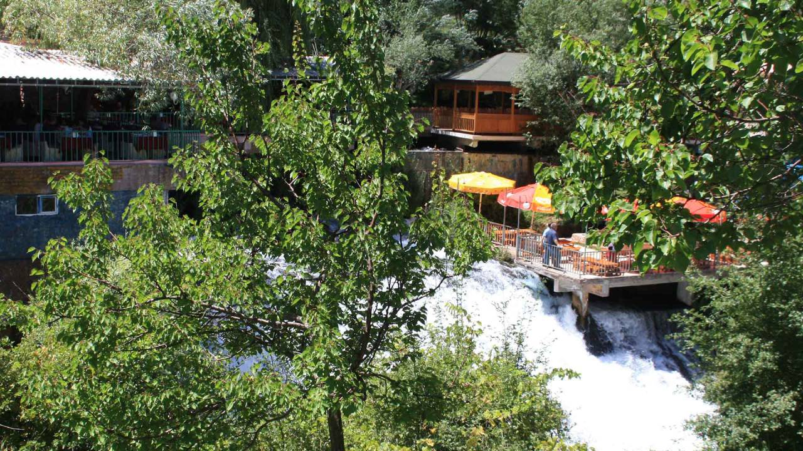
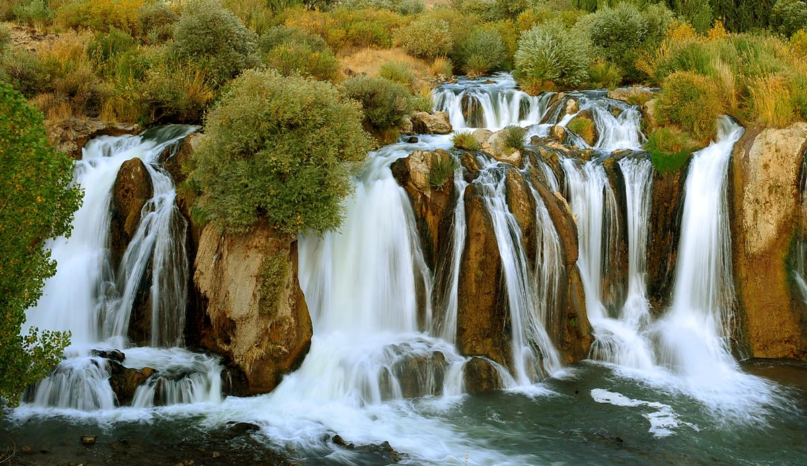
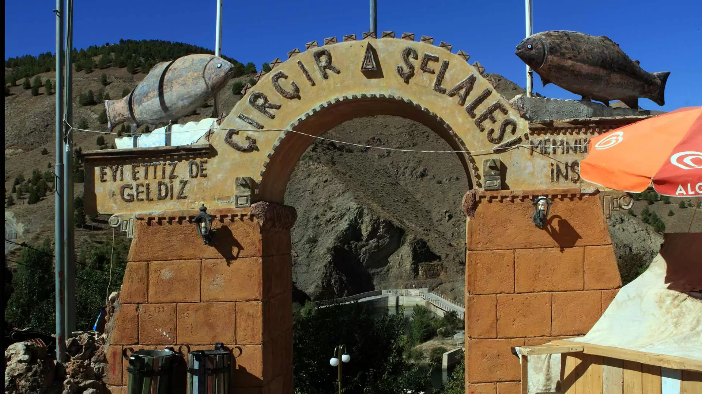

Çırçır Şelalesi'nin Tarihi:
Çırçır Şelalesi, Elazığ il sınırlarında yer alan ve bölgenin en önemli doğal zenginliklerinden biri olarak bilinen bir şelaledir. Tarih boyunca hem doğal güzellikleri hem de stratejik konumu ile dikkat çekmiştir. Bu bölge, farklı medeniyetlerin yerleşim alanları arasında yer almış ve her dönem, şelalenin çevresini kullanmış ya da çevreye yerleşim kurmuştur.p>
Çırçır Şelalesi'ni Kimler Yönetti?
- Urartular (MÖ 9. – 6. yüzyıl): Çırçır Şelalesi ve çevresindeki doğal alanlar, Urartular döneminde bölgenin savunma amacıyla kullanılmıştır.
- Asurlar (MÖ 7. – 6. yüzyıl): Asurlar, bölgedeki su kaynaklarını stratejik bir şekilde kullanmış ve Çırçır Şelalesi'nin çevresindeki arazilerde tarım yapmışlardır.
- Roma İmparatorluğu (MÖ 1. yüzyıl – 5. yüzyıl): Roma İmparatorluğu döneminde, bölge doğal güzellikleriyle tanınmış ve bu alan, Roma'ya bağlı halkların yaşam alanı olmuştur.
- Selçuklular (11. yüzyıl): Selçuklular, bölgedeki su kaynaklarını kullanarak sulama sistemleri kurmuş ve bölgeyi tarımsal olarak verimli hale getirmiştir.
- Osmanlı İmparatorluğu (15. yüzyıl – 19. yüzyıl): Osmanlı döneminde, Çırçır Şelalesi'nin çevresi koruma altına alınmış ve bölge halkı su kaynaklarını kullanarak çeşitli yerleşimler kurmuştur.
- Cumhuriyet Dönemi (1923 – günümüz): Cumhuriyetin kuruluşu ile birlikte, bölge çevre düzenlemeleri yapılmış ve Çırçır Şelalesi, doğa turizminin merkezi haline gelmiştir.
Çırçır Şelalesi'ndeki Yapılar
- Hediyelik Eşya Dükkanları: Çırçır Şelalesi'ni ziyaret ettiğinizde, girişte yöresel leblebi gibi atıştırmalıkların satıldığı stantlarla karşılaşabilirsiniz. Ayrıca, tesis içinde hediyelik eşya ve yöresel ürünlerin satıldığı alanlar bulunmaktadır. Bu sayede sevdiklerinize veya kendinize Elazığ'a özgü hatıralar alabilirsiniz.
- Restoranlar: Çırçır Şelalesi'nin üzerinde kurulu olan Keban Alabalık Tesisleri, şelale manzarası eşliğinde 23 çeşit alabalık menüsü sunmaktadır. Menüde ızgara alabalık, alabalık köfte, alabalık sote, alabalık katmer ve Adana gibi seçenekler bulunmaktadır. Tesis, yaz döneminde misafirlerini ağırlamaya devam etmektedir.
Çırçır Şelalesi'nden Bazı Fotoğraflar:


